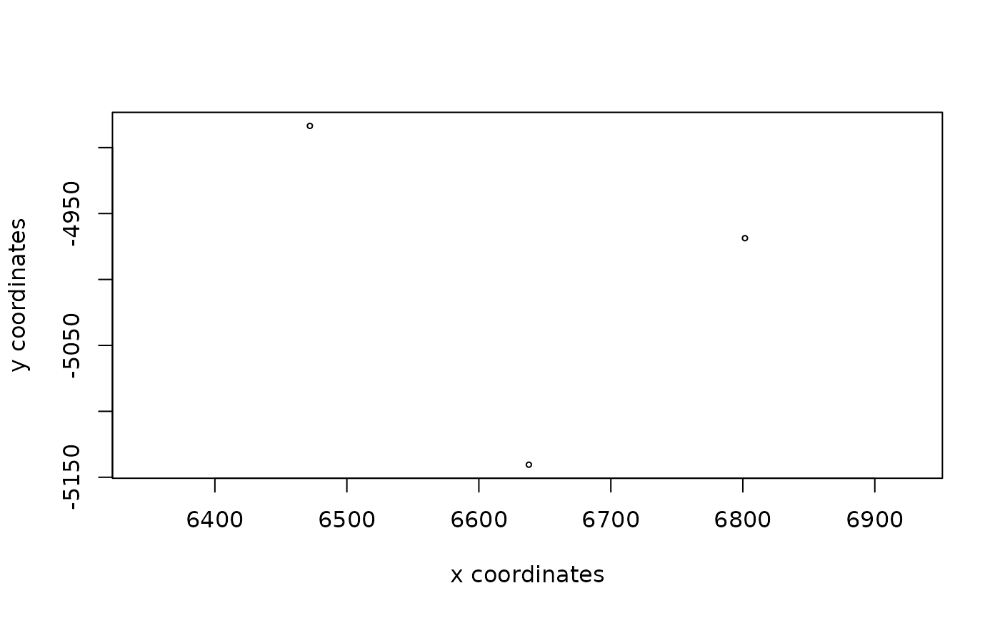

Create an S4 spatLocsObj
Usage
createSpatLocsObj(
coordinates,
name = "test",
spat_unit = "cell",
provenance = NULL,
misc = NULL,
numeric_format = c("pair", "triplet"),
verbose = TRUE,
...
)Arguments
- coordinates
spatial coordinates
- name
name of spatLocsObj
- spat_unit
spatial unit of aggregated expression (e.g. 'cell')
- provenance
origin data of aggregated expression information (if applicable)
- misc
misc
- numeric_format
character. One of
"pair"(default) or"triplet". Whethernumericinputs should be understood as XY pairs or XYZ triplets.- verbose
verbosity
- ...
additional params to pass
Examples
# from data.frame
x <- data.frame(
cell_ID = c("cell_1", "cell_2", "cell_3"),
sdimx = c(6637.881, 6471.978, 6801.610),
sdimy = c(-5140.465, -4883.541, -4968.685)
)
s1 <- createSpatLocsObj(coordinates = x, name = "raw")
plot(s1)

# from matrix
m <- matrix(c(2 ,3, 4, 2), ncol = 2)
rownames(m) <- c("cell1", "cell2")
s2 <- createSpatLocsObj(m)
#> [spatlocs] matrix input has rownames.
#> Using these as IDs.
plot(s2)
# from numeric xy pairs
num2d <- c(1, 3, 5, 9)
s3 <- createSpatLocsObj(num2d)
plot(s3)
# from numeric xyz triplets
num3d <- c(3, 2, 9, 3, 8, 5)
s4 <- createSpatLocsObj(num3d, numeric_format = "triplet")
plot(s4)